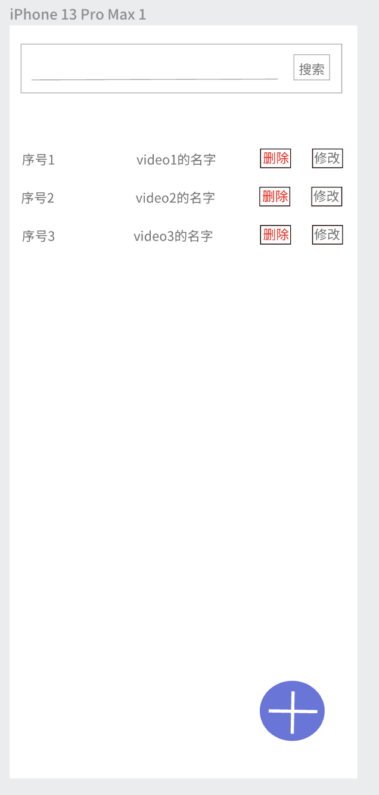
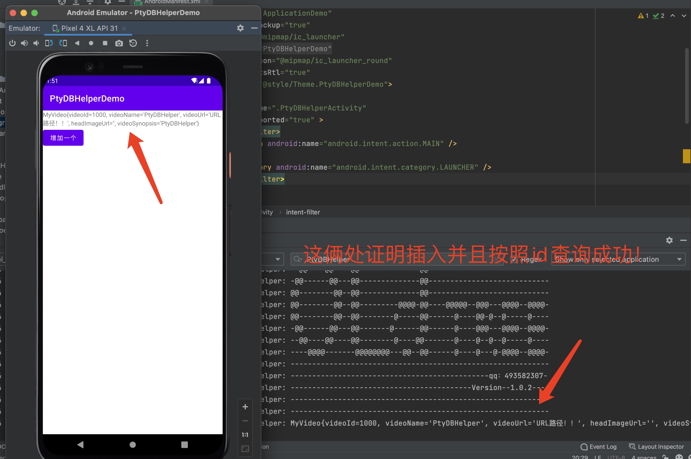
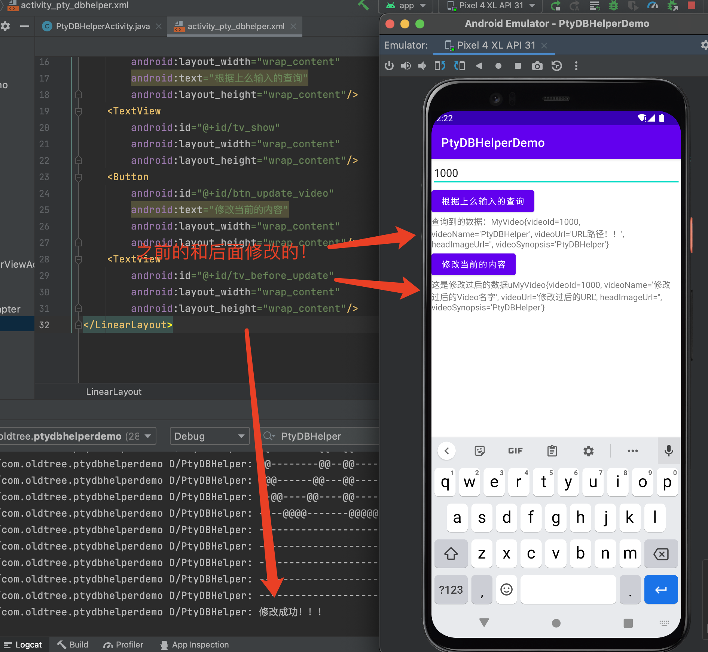

首先，我在这里啰嗦的介绍一些什么是ORM框架，如果你知道什么是ORM可以直接点击导航上面的快速开始，享用大餐！！！
ORM框架全称（Object Relational Mapping），通俗点就是对象与关系相互映射！，如果你还不理解，我这里用一个例子来说明
这里我抽象了一个实体类：User类(包含3个属性和一个带参数的构造方法)
//抽象的User类
public class User{
private Long userId;
private String username;
private String password;
public User(Long userId,String username,String password){
this.userId = userId;
this.username = username;
this.password = password;
}
}
那么这三个对象映射成的表格理应该是这样的
| userId | username | password |
|---|---|---|
| 1 | 张三 | 123456 |
| 2 | 李尔 | 123456 |
| 3 | 王武 | 1234567 |
使用PtyDBHelper之前我们得做一些准备工作！开始的准备工作这部分很重要，请详细看。我们首先要引入jar包，如果你的IDE是Android studio，那么可以去最后面看扩展部分Android Studio引入jar包教程！引入框架后我们建立一个配置类，这个类不需要写任何方法属性等，只需要加上@PtyConfig注解，类名自己随意，但是我推荐取名DBConfig
然后介绍一个类PtyMaster，我们需要用这个类在整个app的应用上面通过PtyMaster内部的autoConfig(Class aclass)方法进行全局配置，而不是在某个activity或者fragment等的生命周期上面进行PtyDBHelper的初始化操作。
所以我们需要用一个类去继承Application类，然后在onCreate()方法里面进行初始化，我们直接使用框架的PtyMaster类中提供的autoConfig(YourConfig.class)方法传入上面我们建立的配置类去进行初始化，这部分很重要
如果没有初始化就去操作，会抛出异常，下面这个案例就是我用一个ApplicationDemo类去继承Application类，然后在全局xml里面加上给app加上name属性即可，具体实现步骤和代码如下：
pojoClassArray,这个属性可以加一些class数据，如下，也可以啥也不加。但是如果不加，后面自己调用对应Dao的时候最好是提前调用Dao的mappingTable(Class pojoClass)方法，把对应映射表的实体的class类型传递过去！
@PtyConfig(dbName = "demo.db",dbVersion = 1,pojoClassArray = {
User.class,
Score.class
})
public class DBConfig {
}
onCreate()方法内部初始化
public class ApplicationDemo extends Application {
@Override
public void onCreate() {
super.onCreate();
//下面是2种方式对ptyDbhelper初始化,这部分很重要，因为sqlite是全局配置
/**
* PtyMaster.getInstance(DBConfig.class)
* .autoConfig(this);
*/
PtyMaster.autoConfig(this, DBConfig.class);
}
}
到这里我们对PtyDBHelper的初始化工作已经完成了，剩下的就根据你的项目需求进行下面的操作！！
PtyDBHelper内部提供注解的注解包括作用如下：
| 类名 | 作用 | 携带属性 |
|---|---|---|
@PtyConfig |
PtyDBHelper的全局配置类 | String dbName, String dbVersion,Class[] pojoClassArray |
@PoJo |
声明该类为一个表 | String value |
@Pk |
声明主键 | boolean autoincrement |
@NotNull |
声明字段不能为空 | 暂无 |
@Unique |
字段约束 | String constraintName |
废话不多，我们直接上例子：
因为上面我们以及抽象了一个User类，那么现在我们抽象一个属性比较全面一点的类
就拿视频来抽象，简单分析，视频所含有的属性：分类，视频名称，Url/本地文件路径的地址，封面
视频和图片的数据我们不考虑存放在sqlite，因为10mb的视频数据量就很大，转换为二进制存放到sqlite的速度会很慢！应该用专用的云COS来存放数据，我们需要用到的也就是url或者本地的文件路径就能够显示视频或者图片
抽象出视频类，我这里取名MyVideo类代码实现如下,注意，必须加上get和set方法还有无参构造方法，这里为了简洁没有给出，开发请自行加上！
@PoJo
public class MyVideo {
@Pk
private Integer videoId; //id设为主键
private String videoName; //视频名称
@NotNull
private String videoUrl; //存放的视频路径
private String headImageUrl; //存放视频封面的路径
private String videoSynopsis; //视频简介
}
再抽象一个类Dao(这个类用于存放与传输对象数据，一般对应数据库内的表名+Dao取名，所以这里我们取名为：MyVideoDao)，这个类专门封装有一些方法，这些方法对MyVideo这个类所对应映射出的表MyVideo中的数据进行增删改查操作,使用框架封装的Dao，然后无须自己写数据传输的代码逻辑就能进行简单数据传输操作，比如对象的增删改查！！！
public class MyVideoDao extends PtyAbstractDao {
public MyVideoDao(Class aClass) {
super(aClass);
}
}
到这里，我们已经把准本工作做完了，就能直接在项目上面用了，如何用，别着急，继续往下看！！！
上面我们建立了配置类DBConfig，实体MyVideo和MyVideoDao类，并且对PtyDBHelper在ApplicationDemo的onCreate方法中进行初始化操作，接下来,我们做一个显示所有MyVideo数据的VideoActivity，然后增加一些功能按钮，比如增删改查，预期页面如下
我们分为3个大的步骤做上面我们需要达到的效果
Java代码部分,一个Activity至少对应一个xml布局文件
public class PtyDBHelperActivity extends AppCompatActivity {
private ActivityPtyDbhelperBinding binding;
private MyVideoDao myVideoDao;
@Override
protected void onCreate(Bundle savedInstanceState) {
super.onCreate(savedInstanceState);
binding = ActivityPtyDbhelperBinding.inflate(getLayoutInflater());
View root = binding.getRoot();
setContentView(root);
//实例化需要的Dao对象,因为我们点击事件是随时可能发生的，所以最好数据源是在此之前获取到数据
// 然后如果要显示的话才不会报错！
myVideoDao = new MyVideoDao(MyVideo.class);
//增加监听事件！
binding.btnAddVideo.setOnClickListener(new View.OnClickListener() {
@Override
public void onClick(View v) {
addAnewMyVideo();
}
});
}
//这是一个save方法
public void addAnewMyVideo(){
MyVideo myVideo = new MyVideo(1000,"PtyDBHelper","URL路径！！");
boolean flag = myVideoDao.saveOne(myVideo);
if (flag){
Toast.makeText(this,"增加一个成功",Toast.LENGTH_LONG).show();
//这里表示我们以及插入一条数据成功了！
// 然后我们去数据库里面查询刚刚那个,因为泛型的问题
// 所以我们需要强转一下,我们看看能不能查询出来，能的话，说明是有日志输出的
MyVideo newMyVideo = (MyVideo) myVideoDao.findById(1000);
if(null != newMyVideo){
Log.d("PtyDBHelper",newMyVideo.toString());
binding.tvShow.setText(newMyVideo.toString());
}
}
}
}
上面的代码是一个Activity的代码，可以很清楚的看见这个类重写了onCreate方法，封装了一个addAnewMyVideo()方法
当然，这个方法就是插入一条MyVideo类型的数据到数据库所映射的表中，并且如果插入成功就去数据库里面查询，查询到了就显示出来！
需要注意的是，这里的
boolean flag = myVideoDao.saveOne(myVideo);还有
MyVideo newMyVideo = (MyVideo) myVideoDao.findById(1000);
这些才是用到PtyDBHelper的框架的代码,还有我视图绑定不是用的findViewById(int id)方法，而是使用官方提供ViewBinding，一个xml对应一个ViewBinding，这个其实也没有什么，但是考虑到对于初学者，所以我这里稍加赘述，初次接触的话，推荐官方文档看一看，有中文，连接在这-->视图绑定！！！
Xml文件
<?xml version="1.0" encoding="utf-8"?>
<LinearLayout xmlns:android="http://schemas.android.com/apk/res/android"
xmlns:app="http://schemas.android.com/apk/res-auto"
xmlns:tools="http://schemas.android.com/tools"
android:layout_width="match_parent"
android:layout_height="match_parent"
tools:context=".PtyDBHelperActivity">
<TextView
android:id="@+id/tv_show"
android:layout_width="wrap_content"
android:layout_height="wrap_content"/>
<Button
android:id="@+id/btn_add_video"
android:text="增加一个"
android:layout_width="wrap_content"
android:layout_height="wrap_content"/>
</LinearLayout>
布局文件很简单，就是一个TextView和一个Button，按钮事件然后调用上面封装的addAnewMyVideo()方法，然后框架会自动帮我们去封装实体，写对应的sqlite的sql语句!
演示效果，因为某些原因，我就不考虑界面效果什么的截图，只给出部分关键截图，证明我们框架是可以正常运作的，这部分演示可以让我们很直观的了解到框架的便捷性，无须写sql语句，还有一些封装方法查询后返回实例等！！！
通过代码我们只看俩部分即可，文本主页面的TextView的文本显示还有后台的日志输出！
根据截图结合上面代码，我们实现了插入一条数据，和根据id去查询了一条数据，无须自己封装查询返回实例的方法，更无须自己写sql语句！
接下来我们针对上面的小demo进行稍加改动
Java代码部分改动如下：
public class PtyDBHelperActivity extends AppCompatActivity {
private ActivityPtyDbhelperBinding binding;
private MyVideoDao myVideoDao;
@Override
protected void onCreate(Bundle savedInstanceState) {
super.onCreate(savedInstanceState);
binding = ActivityPtyDbhelperBinding.inflate(getLayoutInflater());
View root = binding.getRoot();
setContentView(root);
//实例化需要的Dao对象,因为我们点击事件是随时可能发生的，所以最好数据源是在此之前获取到数据
// 然后如果要显示的话才不会报错！
myVideoDao = new MyVideoDao(MyVideo.class);
EditText editText = binding.etId;
binding.btnFind.setOnClickListener(new View.OnClickListener() {
@Override
public void onClick(View v) {
//获取输入的id
String inputId = editText.getText().toString();
if(null!=inputId){
//输入的是文本，需要转换一下，因为我们findById是需要Integer/int类型的参数
int parseIntId = Integer.parseInt(inputId);
MyVideo myVideo = (MyVideo) myVideoDao.findById(parseIntId);
//如果不是空，表示在数据库中查到了
if(null!=myVideo){
binding.tvShow.setText("查询到的数据："+myVideo.toString());
}
}
}
});
binding.btnUpdateVideo.setOnClickListener(new View.OnClickListener() {
@Override
public void onClick(View v) {
// 这里我要的是更新查询到的一条数据，有很多方法，我偷个懒，直接复制上面的代码再查一次然后，进行修改数据后
// 再进行更新操作
String inputId = editText.getText().toString();
if(null!=inputId){
//输入的是文本，需要转换一下，因为我们findById是需要Integer/int类型的参数
int parseIntId = Integer.parseInt(inputId);
MyVideo myVideo = (MyVideo) myVideoDao.findById(parseIntId);
//如果不是空，表示在数据库中查到了
if(null!=myVideo){
//这里我进行数据修改操作！
myVideo.setVideoUrl("修改过后的URL");
myVideo.setVideoName("修改过后的Video名字");
//进行数据库中数据的修改
boolean updateOne = myVideoDao.updateOne(myVideo);
if(updateOne){
//这里表示修改成功！
Log.d("PtyDBHelper","修改成功！！！");
Object newVideo = myVideoDao.findById(myVideo.getVideoId());
//查出来再显示
binding.tvBeforeUpdate.setText("这是修改过后的数据u"+newVideo.toString());
}
}
}
}
});
}
}
xml改动如下
<?xml version="1.0" encoding="utf-8"?>
<LinearLayout xmlns:android="http://schemas.android.com/apk/res/android"
xmlns:app="http://schemas.android.com/apk/res-auto"
xmlns:tools="http://schemas.android.com/tools"
android:layout_width="match_parent"
android:layout_height="match_parent"
android:orientation="vertical"
tools:context=".PtyDBHelperActivity">
<EditText
android:id="@+id/et_id"
android:hint="请输入id"
android:layout_width="match_parent"
android:layout_height="wrap_content"/>
<Button
android:id="@+id/btn_find"
android:layout_width="wrap_content"
android:text="根据上么输入的查询"
android:layout_height="wrap_content"/>
<TextView
android:id="@+id/tv_show"
android:layout_width="wrap_content"
android:layout_height="wrap_content"/>
<Button
android:id="@+id/btn_update_video"
android:text="修改当前的内容"
android:layout_width="wrap_content"
android:layout_height="wrap_content"/>
<TextView
android:id="@+id/tv_before_update"
android:layout_width="wrap_content"
android:layout_height="wrap_content"/>
</LinearLayout>
效果截图
这部分不打算提供截图效果，可以自己尝试！
//删除id为1000的数据,这里我们可以对返回值进行判断 boolean flag = myVideoDao.deleteById(1000);
到这里，基础用法其实已经演示完毕
这部分后续补充！！！！！
20世纪90年代，硬件领域出现了单片式计算机系统，这种价格低廉的系统一出现就立即引起了自动控制领域人员的注意，因为使用它可以大幅度提升消费类电子产品（如电视机顶盒、面包烤箱、移动电话等）的智能化程度。Sun公司为了抢占市场先机，在1991年成立了一个称为Green的项目小组，帕特里克、詹姆斯·高斯林、麦克·舍林丹和其他几个工程师一起组成的工作小组在加利福尼亚州门洛帕克市沙丘路的一个小工作室里面研究开发新技术，专攻计算机在家电产品上的嵌入式应用。
由于C++所具有的优势，该项目组的研究人员首先考虑采用C++来编写程序。但对于硬件资源极其匮乏的单片式系统来说，C++程序过于复杂和庞大。另外由于消费电子产品所采用的嵌入式处理器芯片的种类繁杂，如何让编写的程序跨平台运行也是个难题。为了解决困难，他们首先着眼于语言的开发，假设了一种结构简单、符合嵌入式应用需要的硬件平台体系结构并为其制定了相应的规范，其中就定义了这种硬件平台的二进制机器码指令系统（即后来成为“字节码”的指令系统），以待语言开发成功后，能有半导体芯片生产商开发和生产这种硬件平台。对于新语言的设计，Sun公司研发人员并没有开发一种全新的语言，而是根据嵌入式软件的要求，对C++进行了改造，去除了留在C++的一些不太实用及影响安全的成分，并结合嵌入式系统的实时性要求，开发了一种称为Oak的面向对象语言。
由于在开发Oak语言时，尚且不存在运行字节码的硬件平台，所以为了在开发时可以对这种语言进行实验研究，他们就在已有的硬件和软件平台基础上，按照自己所指定的规范，用软件建设了一个运行平台，整个系统除了比C++更加简单之外，没有什么大的区别。1992年的夏天，当Oak语言开发成功后，研究者们向硬件生产商进行演示了Green操作系统、Oak的程序设计语言、类库和其硬件，以说服他们使用Oak语言生产硬件芯片，但是，硬件生产商并未对此产生极大的热情。因为他们认为，在所有人对Oak语言还一无所知的情况下，就生产硬件产品的风险实在太大了，所以Oak语言也就因为缺乏硬件的支持而无法进入市场，从而被搁置了下来。
libs，这个命名非强制要求！JDK（Java Development Kit）称为Java开发包或Java开发工具，是一个编写Java的Applet小程序和应用程序的程序开发环境。JDK是整个Java的核心，包括了Java运行环境（Java Runtime Environment），一些Java工具和Java的核心类库（Java API）。不论什么Java应用服务器实质都是内置了某个版本的JDK。主流的JDK是Sun公司发布的JDK，除了Sun之外，还有很多公司和组织都开发了自己的JDK，例如，IBM公司开发的JDK，BEA公司的Jrocket，还有GNU组织开发的JDK [17] 。 另外，可以把Java API类库中的Java SE API子集和Java虚拟机这两部分统称为JRE（JAVA Runtime Environment），JRE是支持Java程序运行的标准环境 [18] 。 JRE是个运行环境，JDK是个开发环境。因此写Java程序的时候需要JDK，而运行Java程序的时候就需要JRE。而JDK里面已经包含了JRE，因此只要安装了JDK，就可以编辑Java程序，也可以正常运行Java程序。但由于JDK包含了许多与运行无关的内容，占用的空间较大，因此运行普通的Java程序无须安装JDK，而只需要安装JRE即可 [19] 。